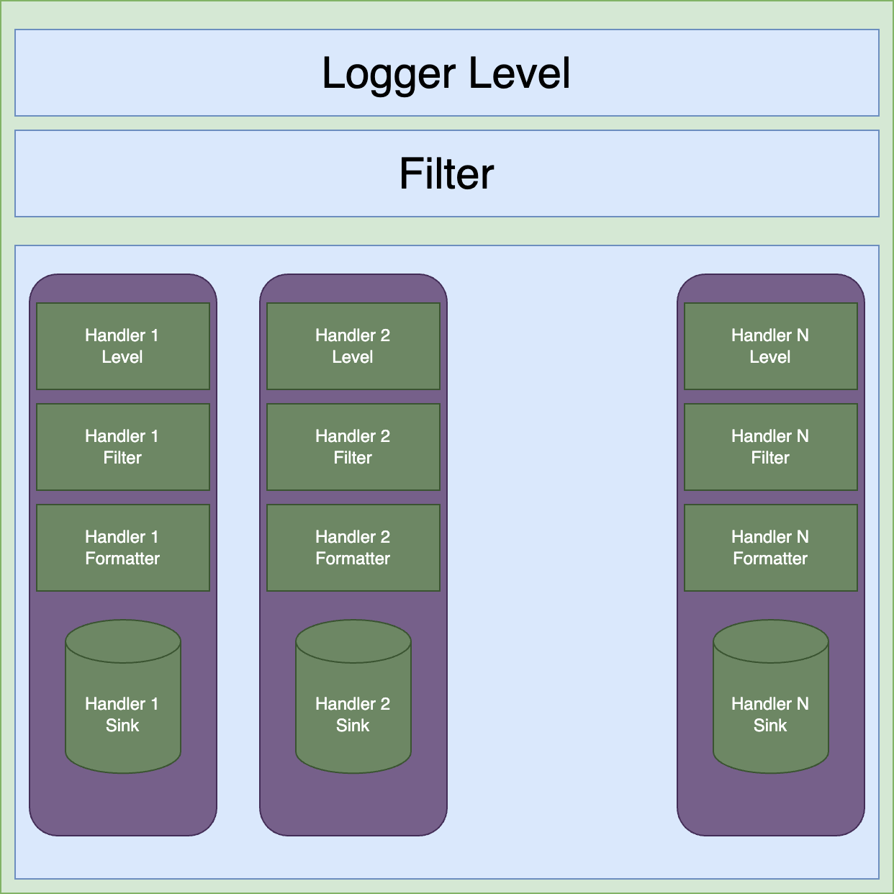

import logging
logger = logging.getLogger(__name__)
logger.setLevel(logging.INFO) # Should print at level logging.INFO and above
logger.info("Hello")Problem
Logging in Python is very flexible, but has some odd defaults that make it non-intuitive to use.
The simplest example is the following code, which goes not print out anything:
See? Nothing printed.
We can try the following solution:
import logging
logger = logging.getLogger('example')
logger.setLevel(logging.INFO)
logger.info('one') # nothing printed
logging.info('two') # nothing printed
logger.info('three') # prints / logs "three"INFO:example:threeWhy is only three printed? We will see why after looking at the next example, which fixes these problems.
import logging
logging.basicConfig()
logger = logging.getLogger(__name__)
logger.setLevel(logging.DEBUG) # Should print at level logging.DEBUG and above
logger.info("Hello")INFO:__main__:HelloThe addition of logging.basicConfig() now allows you to set the level in a way that you expect!
The problem is that python has a hierarchical system of handlers, and calling logging.basicConfig() affects the root handler. Logging messages start at the root hander, and it decides whether the logger you are defining even gets to see the message. In our previous example, where we tried to log one, two, and three, the call to logging.info implicitly called the logging.basicConfig(), which then affects the all loggers from here on out. This call is changing the root logging handler, something we will define later on.
To show that this is a change that persists, let’s run the same code sample in the same kernel:
import logging
logger = logging.getLogger('example')
logger.setLevel(logging.INFO)
logger.info('one') # nothing printed
logging.info('two') # nothing printed
logger.info('three') # prints / logs "three"INFO:example:one
INFO:example:threeSolutions in a hurry
I just want something that works for simple apps
If you just want to get logging, the basic solution is
- Call
logging.basicConfig()early. This means doing it before other modules!
The problems with this approach are: 1. The call to logging.basicConfig() affects the root logger, so all loggigng is affected. This causes noisy libraries to propogate their error messages. 2. The call to logging.basicConfig() is only processed once, so you have to make sure it isn’t called by any of your imports. This also means that your import is going to fight with everyone else’s. It isnt’ a problem if you are all trying to set the level to DEBUG in the basic config.
Calling logging.basicConfig() acts on the root logger, and because logging is handled in a hierarchy (with the root logger at the root), this can make it hard to reason about. There is only one root logger in your application, so you have to be aware of these side affects for not only everything you use, but everything you import.
This stackoverflow answer discusses this in more detail.
The better approach
A better approach is (from mCoding’s excellent overview)
- Create a logger for your own script
- Leave propogation turned on to the root logger
- Put all complicated things (filters, formatters, etc) all on the root logger, not in your custom logger
- Use the logger you created, not the root logger, when logging messages. Your logger will propagate to the root logger, which will then use the filters and formatters to “do-the-right-thing” (TM).
In code, you might do this:
import logging
import logging.config
logger = logging.getLogger("my_app")
logger_config = {
"version": 1, # always 1, allows future updates
"disable_existing_loggers": False,
"filters":{},
"formatters": {
"simple": {
"format": "%(levelname)s %(message)s",
}
},
"handlers": {
"stderr": {
"class": "logging.StreamHandler", # Print to screen
"formatter": "simple", # References a key in the formatters dict
"stream": "ext://sys.stderr",
}
},
"loggers": {
"root": {"level": "DEBUG", "handlers": ["stderr"]} # handlers references a key in handlers dict
}
}
logging.config.dictConfig(config=logger_config)
# use your logger
logger.info("This is my logger, and is good")
# don't use the root logger directly
logging.info("This is using the root logger, and this is bad")Understanding Logging
James Murphy (of mCoding) does an excellent job here of talking about what a logger is and now it works. This is very much inspired by his presentation of it in this video
A single logger
Here are the basic parts of logging:
- logger: The is the the thing you make when calling
my_logger = getLogger("my_awesome_logger"). The logger is responsible for creating LogRecords, which is a data structure containing the information we want to log. It does this with a variety of methods:my_logger.debug("message")creates a LogRecord with level DEBUG, etc. In addition, a logger contains the following parts:- An internal level (numeric, but commonly aliased to DEBUG, INFO, WARNING, ERROR, CRITICAL) for the logger that can be set and changed.
- A filter, for determining which records
- A collection of handlers (see below)
- A propagation flag
- log records: A log record is recreated when you call
my_logger.debug(message),my_logger.info(message), etc. It creates a data structure that contains the message you gave it, as well as injecting a collection of metadata (e.g. when the message was called, what module it was called in, what function you were in, what line number you were on, what the level of the message is (debug vs info vs warning vs error vs critical), etc. The various fields you can access are listed in the documentation here. - formatters: A way of taking a log record, and turning into a string that can be printed, stored in a file, a database, etc.
- handlers: A handler takes a log record, and decides what to do with it. Each handler typically deals with place to put logs, called a sink. If you wanted to print logs to std out and save them in a file, you would typically have two handlers: one handler for printing to std out, and a separate handler for each. A handler typically has
- An internal level (numeric, but commonly aliased to DEBUG, INFO, WARNING, ERROR, CRITICAL), just like the logger (this is a source of much confusion)
- A filter, for determining if this log record should be handled
- A formatter, which takes a log record and turns it into a string. This is the thing that is printed / stored in a file / stored in a database, etc.
- A sink: where we put the non-filtered strings we created from log records
Here is a graphical representation of a single logger:

When you call my_logger.info("my message"), here is what happens:
- The logger first checks it’s log level. If it is INFO or lower, then the logger creates the log record. If the logger’s level is INFO or higher, we don’t even make the record.
- The logger then creates the LogRecord, which contains the message
"my_message", as well as other meta data (e.g. when the LogRecord was created, the module/function/line number of the call, etc). - The logger then checks if the LogRecord should be filtered out. It has access to all the data in the log record, not just the level. If it should be filtered out, we stop here.
- The logger then passes the LogRecord to each handler. Each handler now goes through a similar set of steps:
- Each handler checks it’s level, to see if it is INFO or lower. The handler stops if it’s level is higher than INFO.
- Each handler with level INFO or below sees if it should filter out this message (e.g. some records might be okay to go on a screen, but not saved to disk)
- For each handler with level INFO or below, that didn’t filter out the message, then formats the message, and sends it to it’s sink.
- The LogRecord is then propagated on to the parent logger of this logger (!!).
- If
my_loggerrejects the LogRecord, we stop on steps 1 or 3 – we never get here. Being rejected by the logger means no propagation. - If
my_loggerdoesn’t reject the LogRecord, we do this step after all the handlers formy_logger– even if every handler formy_loggerrejected the message.
- If
Warning
Here are a couple of “gotchas”
If you have a handler with a level of DEBUG, but the logger has a higer level (e.g. INFO), you won’t see any DEBUG messages. This is because the logger is dropping the messages before the handler gets a chance to see it.
If you have a logger that drops a message (by level or filter), it will not be propagated to other loggers.
If the logger doesn’t drop a message, it will be propagated, even if no logger handles it.
The reason for this is if you wanted to block messages from Pandas, you only have to manipulate the logger to block at the logger e.g. to block Pandas DEBUG messages while keeping INFO and higher, but keep debug messages from your application, you would only need to set the LEVEL on the pandas logger to INFO, and the logger for your application to DEBUG.
So in addition to multiple handlers, we also have multiple loggers. Let’s deal with that next.
The logging tree
When you type import logging into your application, you get a root logger. Any other logger you create is a descendent of this root.
When you call logging.getLogger("silly_logger"), then Python will create a logger object called "silly_logger" if it doesn’t exist; once the logger exists it will be returned. You will only have logger called "silly_logger" at any time in your program. This logger will (by default) pass any message it doesn’t drop on to the root logger.
When you call logging.getLogger("my_app.X.awesome_logger"), you get the three loggers (either returning them if they exist, or creating them): * my_app * my_app.X * my_app.X.awesome_logger and a link to the my_app.X.awesome_logger is returned. Each one of these loggers propagates any non-dropped messages up the chain to the next logger, with the my_app logger propagating to the root.
As a diagram, we have
flowchart BT AWESOME[my_app.X.awesome_logger] --> MAX[my_app.X] --> MA[my_app] --> Root S[silly_logger] --> Root
It is possible to change loggers so they don’t propagate upward, but by default they do. Because it is very common for imports to have their own loggers, you should assume that the root logger will have messages passed to it, even if you turn propagation off in your loggers.
Going back to the initial problem
When we started this article, we looked at a simple problem of why logging didn’t work until the root logger or basicConfig was called. Let’s look at it again
What we get out is just
This will be seen
INFO:test:Bye!The order of events are roughly:
- Line 3: We make a new logger called
test. This logger does not have any handlers. The root logger does have a handler, which prints to standard error, and WARNING or higher by default. - Line 4: We set the warning level of the
testlogger to DEBUG. - Line 5: We send the
testlogger an INFO message.- It accepts it, but has no handlers. It makes a log record, and propagates on to the root logger.
- The root logger has a default level of WARNING, and ignores this message.
- Line 6: We sent the
testlogger a WARNING message.- It accepts it, but has not handlers. It makes a log record, and propagates on to the root logger.
- The root logger has a default level of WARNING, so it will handle this message.
- The root logger’s default formatter just prints the message
- Line 7: We sent the
testlogger an INFO message.- Same as line 5, it passes the LogRecord onto the root logger, and the root logger ignores it.
- Line 10: We send the root logger its first message directly (rather than it being passed). Or more precisely, we are calling
infoin the logging module.- You can see from the code in Github, this sees we have no root configured yet, so it calls
basicConfig(). - From the docstring of
basicConfig()you can see it does nothing, unless we don’t have handlers for the root logger. - In that case, it will add one (a stream), set a basic format string with a bit more information, and not require a level anymore.
- You can see from the code in Github, this sees we have no root configured yet, so it calls
- Line 12: We send the
testlogger an INFO message.- It accepts it, but has no handlers. It propagates it to the root logger.
- The root logger now accepts any level after the
basicConfig(), and has the formatter updated. From the LogRecord, it producesINFO:test:Bye!
If this code is in a Jupyter notebook and you ran in again, you would have different output, precisely because the root logger has already been configured.
Recommendations
With multiple layers of loggers and handlers, it is easy to see how messages could get lost or repeated. Here are some recommendations take from James Murphy’s mCoding video:
- Don’t use the root logger, make your own.
- You don’t need a logger for every file, just make one for your app.
- Call DictConfig on your logger, to explicitly set up what you want the handlers, filters, and formatters to be
- Put all handlers, filters, and formatters on the root logger, not your own logger(s). Just let everything propagate up to the root, and then deal with it there (slight exception if using a QueueHandler)
Advanced Logging
The first thing you should do is watch the mCoding video mentioned a few times already. It has some examples of setting up a rotating file handler, and a queue handler (which I will go into more detail on below).
Beyong that, there are lots of different configuration “recipes” that you can find in the Python Logging Cookbook.
The Queue handler is interesting, because the idea is that logging posts to a queue. The queue is processed by a worker in another thread, so that if your log involves an expensive IO operation (TBC)